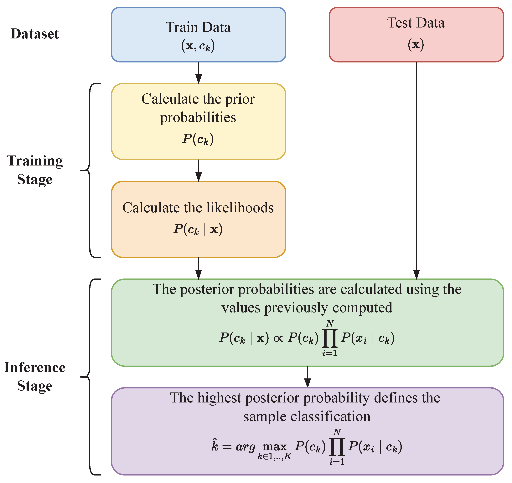

Naive Bayes
Overview

In general, any machine learning model that falls under the umbrella of "Naive" Bayes is a model that assumes that the features of the data are independent of each other. This is a very strong, and often naive assumption, but it allows for simple statistical models that can be used for classification, and can be a good approximation for many problems. In particular, what this assumes is that: $$p(f_1, f_2, ..., f_n | c) = \prod_{i=1}^{n} p(f_i | c)$$ where $f_i$ is the $i^{th}$ feature of the data, and $c$ is the class label, i.e. the total probability of all the features given the class label is equal to the product of the probability of each feature given the class label. Using this we can then generate a simple form for the probability in the posterior: $$p(c | f_1, f_2, ..., f_n) = \frac{p(c) \prod_{i=1}^{n} p(f_i | c)}{p(f_1, f_2, ..., f_n)}$$ We can train the model by calculating the prior probability of each class, \(p(c)\), and the conditional probability of each feature given the class, \(p(f_i | c)\), and then use these to calculate the posterior probability of each class given the features, \(p(c | f_1, f_2, ..., f_n)\). Then, when feeding the model new data, we can compare the posterior probabilities of each class and classify according to the class with the highest probability. Naive Bayes is thus a supervised learning method as we have to know the ground truth classes for our training data in order to assign classes for any future data. A flowchart of the general algorithm is shown in the graphic at left.
Note that we can see an immediate potential issue with this naive approach — if any of the probabilities ever go to zero, then the entire posterior probability will go to zero. While this may be factually true, it's bad for our model, as it means that we will never be able to classify any data as that class. There are many techniques to avoid this, but most of them employ some kind of smoothing function across the probability values such that they can get quite small but never go to zero, thus allowing us to classify data as that class and mitigate this problem. For this project we will use the Multinomial Naive Bayes model from the scikit-learn library, which by default uses an additive Laplace smoothing function to avoid this problem.
There are many types of Naive Bayes models, but in general the differences between different classifiers relates to the assumed underlying distribution. Two of the most commonly used Naive Bayes methods are Multinomial and Bernoulli, which simply means that the features are assumed to be distributed according to a Multinomial or Bernoulli distribution. In the Multinomial case, this means that the features are assumed to be discrete counts of events (histograms), i.e. the number of times a word appears in a document. The Bernoulli case is similar, except that the features are assumed to be binary, i.e. whether or not a word appears in a document at all. As you might have guessed, both of these methods are commonly applied to text based data, which is not at all similar to our data, but we can certainly make histograms. For this project we will thus use the Multinomial Naive Bayes model, as we would like to represent some range of values for each feature, rather than just a binary value.
Data preparation
Since Multinomial Naive Bayes requires that we essentially have histograms for each feature, we need to bin our data. But first we need to decide which features we would like to fit with. For the disk-wind model data we're going to try to predict whether a given set of parameters produces a model with a single or double peaked emission line, so we'll drop the "rotation" label from the data and combine the "singlePeak" and "doublePeak" labels into a single classification label (i.e. instead of having two columns with booleans we'll just have a single column with the corresponding class string). For the SDSS data we'll drop all of the identifier columns as well as the on-sky positions and all of the errors. However we will save the errors for later, as we can use them as weights when fitting our models. We can accomplish all of this data prep with the following code:
def genNBDataMCMC(cleanFile="../MCMC/data/combined_cleaned.csv",bins=5):
df = pd.read_csv(cleanFile)
strLen = 0
columns2ignore = ["rotation","singlePeak","doublePeak"]
#algorithm --
#1. generate bins for each parameter
#2. go through dataframe, find bin number for each parameter at every entry
#3. each entry will be of the shape (binNumber1,binNumber2....binNumerN),label
print("Binning data...\n")
for (i,c) in enumerate(df.columns):
if c in columns2ignore:
continue
else:
x = np.linspace(np.min(df[c]),np.max(df[c]),len(df[c]))
sum,binEdges,binNumbers = binned_statistic(df[c],df[c],statistic='sum',bins=bins)
df[c] = binNumbers #replace data with bin numbers
strLen = trackPercent(i,len(df.columns),strLen)
print("\nGenerating labels...\n")
strLen = 0
df["label"] = ['']*len(df)
for i in range(len(df)):
label = "singlePeak" if df["singlePeak"][i] == 1 else "doublePeak"
df["label"][i] = label
strLen = trackPercent(i,len(df),strLen)
df.drop(columns=columns2ignore,inplace=True)
print("\nSaving data...\n")
df.to_csv("NBMCMCData.csv",index=False)
def genNBDataSDSS(cleanFile="../SDSS/combined_noSize_cleaned.csv",bins=5):
df = pd.read_csv(cleanFile)
strLen = 0
if "noSize" in cleanFile:
columns2ignore = ["specObjID","plate","ra","dec","mjd","fiberid","run2d","objid",
"fieldID","redshiftError","spectroSynFluxIvar_u","spectroSynFluxIvar_g",
"spectroSynFluxIvar_r","spectroSynFluxIvar_z","spectroSynFluxIvar_i",
"err_u","err_g","err_r","err_i","err_z"]
else:
columns2ignore = ["specObjID","plate","ra","dec","mjd","fiberid","run2d","objid",
"fieldID","redshiftError","spectroSynFluxIvar_u","spectroSynFluxIvar_g",
"spectroSynFluxIvar_r","spectroSynFluxIvar_z","spectroSynFluxIvar_i",
"err_u","err_g","err_r","err_i","err_z","petroRadErr_u","petroRadErr_g",
"petroRadErr_r","petroRadErr_z","petroRadErr_i"]
print("Reformatting input for NB")
print("Binning data...\n")
for (i,c) in enumerate(df.columns):
if c in columns2ignore or c == "class":
continue
else:
x = np.linspace(np.min(df[c]),np.max(df[c]),len(df[c]))
sum,binEdges,binNumbers = binned_statistic(df[c],df[c],statistic='sum',bins=bins)
df[c] = binNumbers #replace data with bin numbers
strLen = trackPercent(i,len(df.columns),strLen)
df.drop(columns=columns2ignore,inplace=True)
print("\nsaving data")
out = "NBSDSS_noSizeData.csv" if "noSize" in cleanFile else "NBSDSS_wSizeData.csv"
df.to_csv(out,index=False)
After formatting the data, we will also need to split the data into training and testing sets. We will train our ML models with a subset of the data, then test how the models perform by feeding them the remaining data and seeing how well they can predict the labels. We will use the train_test_split function from the scikit-learn library to do this, i.e. for the SDSS data we would do something like:
df = pd.read_csv("NBSDSS_wSizeData.csv")
X = df.drop(columns=["class"]) #the features in the data (everything but the label)
Y = df["class"] #the label
Xtrain,Xtest,Ytrain,Ytest = train_test_split(X,Y,test_size=0.3) #split the data into training (70%) and testing (30%) sets, randomly selected from the full shuffled dataset
Note that here the integer numbers are the bin numbers corresponding to the location of that entry in the histogrammed data. The number of bins can highly influence the results, and after detailed testing we found that 1000 bins resulted in a plateau in the accuracy of the classifier, so the bin numbers here run from 0 to 999. For the DiskWind model dataset we found that just 5 bins was sufficient to achieve a plateau in accuracy, so the bin numbers here run from 0 to 4, and this illustrates the importance of testing the effects of different parameters on the results of the classifier.
A sample of what the training data looks like is shown below (X & Y are concatenated to display in a single table with Y being the leftmost column). Note that this is also then a representative sample of what the prepared data for decision trees looks like, and the testing dataset is likewise very similar (although disjoint from the training data). It's important that they be disjoint because we don't want our model to "cheat" and learn the labels of the testing data from the training data — we want to see how well it can generalize to new data.
Full data product samples for all the datasets (including the splits into training and testing) are available at the GitHub repo for this project.
Code
Full code to run format the data and run the classifier is available at the GitHub repo for the project. To actually run the classifier is pretty simple in Python with the help of sklearn:
def genResults(NBfile="NBMCMCData.csv",testSize=0.3,weighted=False):
df = pd.read_csv(NBfile)
if "MCMC" in NBfile:
X = df.drop(columns=["label"])
Y = df["label"]
else:
X = df.drop(columns=["class"])
Y = df["class"]
Xtrain,Xtest,Ytrain,Ytest = train_test_split(X,Y,test_size=testSize)
clf = MultinomialNB(force_alpha=True)
if weighted and "SDSS" in NBfile:
cleanFile = "../SDSS/combined_noSize_cleaned.csv" if "noSize" in NBfile else "../SDSS/combined_wSize_cleaned.csv"
weights = genSDSSweights(cleanFile=cleanFile)
trainWeights = weights[Xtrain.index]
clf.fit(Xtrain,Ytrain,sample_weight=trainWeights)
else:
clf.fit(Xtrain,Ytrain)
Ypred = clf.predict(Xtest)
accuracy = clf.score(Xtest,Ytest) if not weighted else clf.score(Xtest,Ytest,sample_weight=weights[Xtest.index])
print("Accuracy: {:.2f}%".format(accuracy*100))
return Ytest,Ypred,accuracy
Essentially all we need to do is read in the properly formatted data, assign the labels and features, split the data into disjoint training and testing sets as detailed above, then fit the model to the training data and test how good our predictions are with the testing data. Note that here (for the first time) we can also use the errors associated with the measurements in the SDSS data as weights! As set up here, this scheme (optinally) deprioritizes data points with large errors, where the errors are calculated as the cumulative error for each row of the data.
Results
After fitting to the training data and predicting the labels for the testing data, we can then calculate the accuracy of the model, i.e. the percentage of the testing data that was correctly classified. For the SDSS data without sizes, using 1000 bins and without weighting results in an accuracy of 92%, and unfortunately adding weights to the data based on their errors doesn't improve (or decrease) this accuracy. For the SDSS data with sizes, again using 1000 bins, results in an accuracy of 95% for the unweighted data, but again adding weights doesn't change this accuracy value. Note that the bin number really matters here, as decreasing the number of bins to 10 results in an accuracy of barely 60% in either case!
For the DiskWind model data the results are significantly worse, with the model only being able to yield an accuracy of roughly 77% with five bins, and unfortunately adding further bins doesn't improve this accuracy. The confusion matrices for all the results are shown below:
Confusion matrices for Naive Bayes classifications. From left to right: DiskWind model data, SDSS data (with sizes), and SDSS data (noSizes). The SDSS data do not include the errors as weights, as this did not improve the accuracy of the classifier.
Conclusions
Here we learned that Multinomial Naive Bayes can be used to predict SDSS data relatively accurately, but that it strugges with the DiskWind data. The results could be lower for the DiskWind case because we simply haven't filled out the parameter space enough, so the model struggles in estimating boundaries in the posteriors for the different classes. They are also likely lower for the DiskWind case because the data here is skewed towards the single peaked models (roughly 70% of the data are parameters that produce single peaked models), so this problem is exacerbated when trying to identify double peaked models, as the confusion matrix clearly shows (more single peaked models are misclassified as double peaked than true double peaked models are correctly classified).
It's also interesting that it does better with the SDSS data with sizes, as previous results from the project using other methods had implied that this data maybe either didn't matter or was even detrimental to the results. The confusion matrices are asymmetric off the diagonal, and interestingly it appears the model struggles most (with either the data with sizes or the data without sizes) with classifying quasars, as it often predicts them to be galaxies. The dataset with sizes helps to reduce this, which is to be expected as (given that quasars are on average much farther than galaxies) the sizes of quasars are often much smaller than galaxies. The second most problematic category is likewise galaxies misidentified as stars, which is again significantly mitigated when the dataset with sizes is used. Combined these two effects are likely responsible for the increase in accuracy when using the dataset with sizes, but interestingly it is not all good news when using the dataset with sizes — while it reduces galaxy/star and quasar/galaxy misclassifications it increases the reverse trends (the number of stars misclassified as galaxies and galaxies misclassified as quasars). Overall this increase is outweighed by the decrease in the other misclassifications, but it's interesting that the model struggles with these two categories in particular and that adding the sizes in would reverse this trend.
All in all, while Naive Bayes is an interesting and powerful method, we had to finagle our data quite a bit to get it to work even reasonable well, and when compared with Decision Trees it's clear that the latter is a much more powerful supervised learning method for our data.